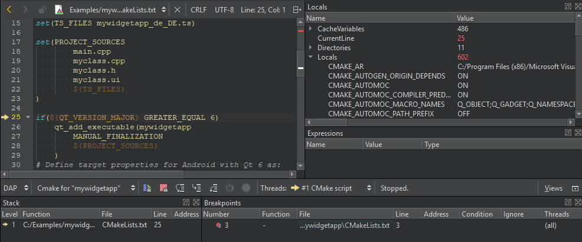

Debug CMake project files
With the Qt Creator implementation of the Debug Adapter Protocol (DAP), you can debug CMake project files.
Note: You need CMake 3.27 or later for DAP.
To debug CMake project files:
- In the Edit mode, set breakpoints in a CMake file.
- Select Debug > Start Debugging > Start CMake Debugging.

When the application stops at a breakpoint, you can examine data in the Debug mode views.
See also Debugging, Examining Data, Debug Mode Views, Setting Breakpoints, and CMake.